Frozen-baseline mission inference 50 paired held-out cases per stage. The same model and cases are used throughout. Controlled stress tests and orbital LEO transport are separate.
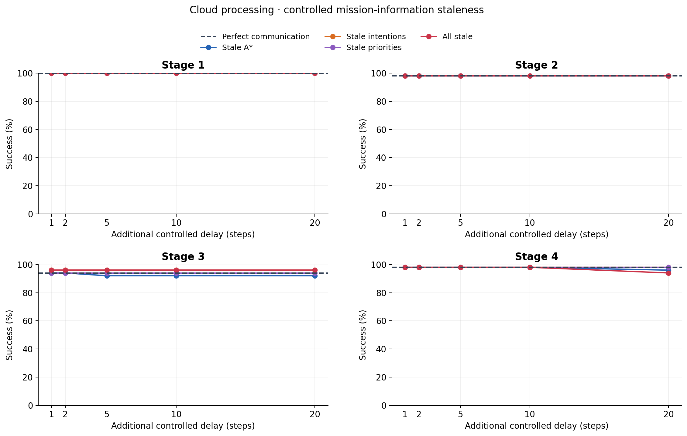
controlled cloud success rate · PDF · SVG 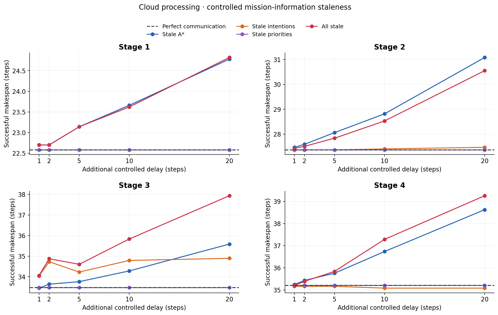
controlled cloud successful makespan · PDF · SVG controlled cloud par2 · PDF · SVG orbital cloud success rate · PDF · SVG orbital cloud successful makespan · PDF · SVG 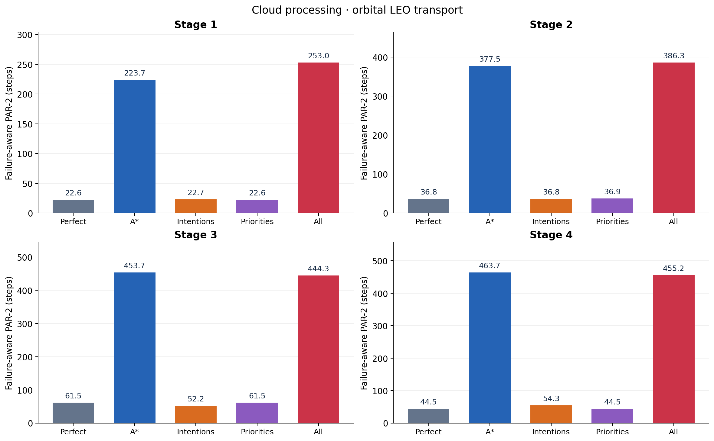
orbital cloud par2 · PDF · SVG 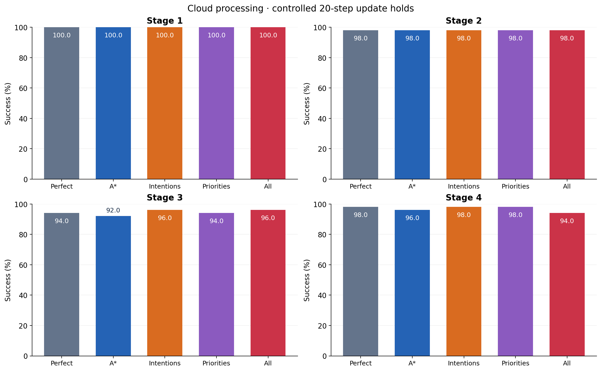
controlled20 cloud success rate · PDF · SVG 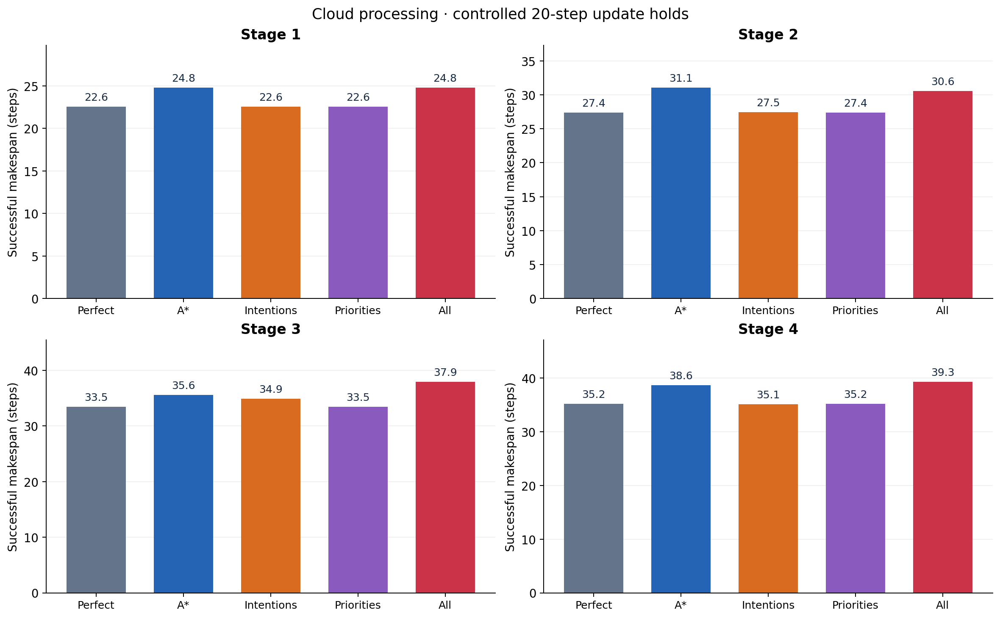
controlled20 cloud successful makespan · PDF · SVG 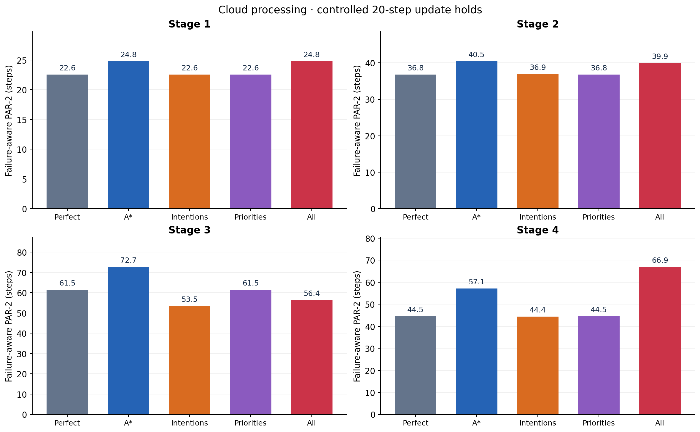
controlled20 cloud par2 · PDF · SVG 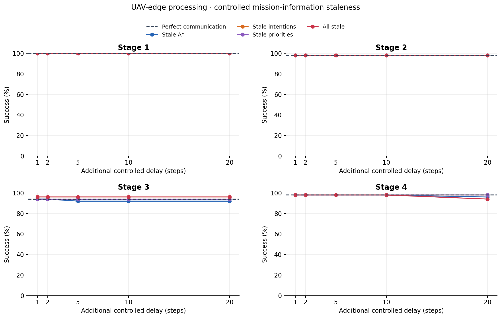
controlled uav success rate · PDF · SVG 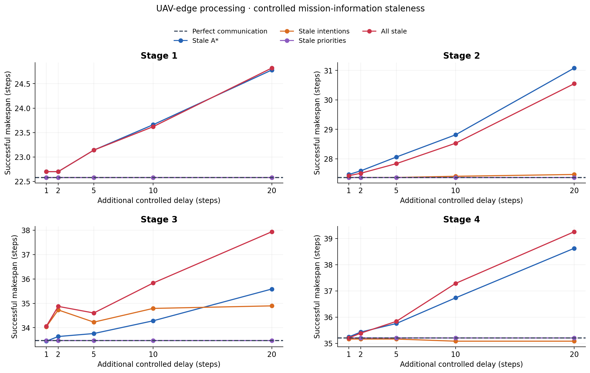
controlled uav successful makespan · PDF · SVG 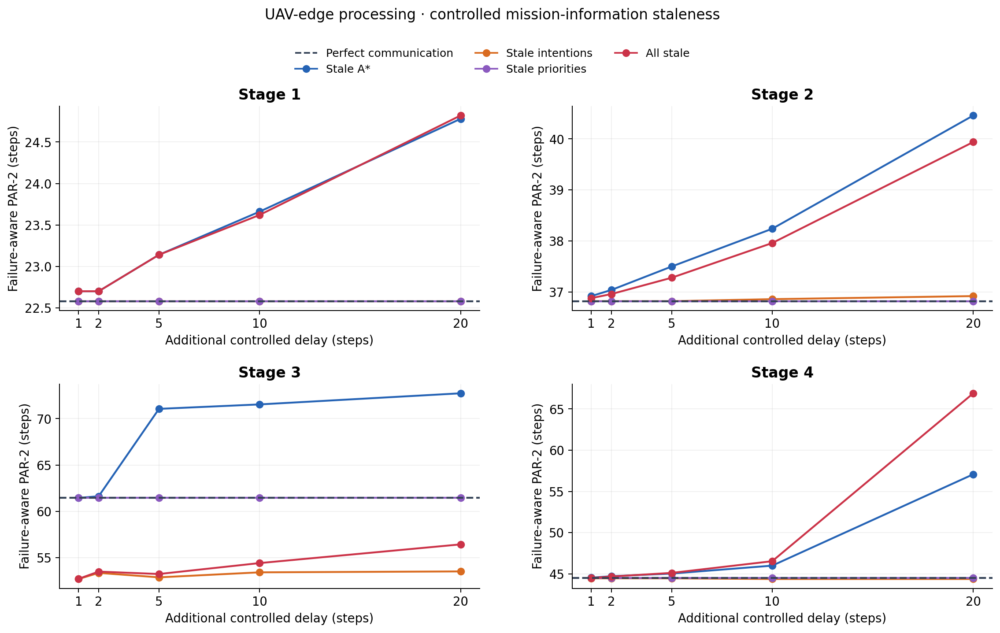
controlled uav par2 · PDF · SVG 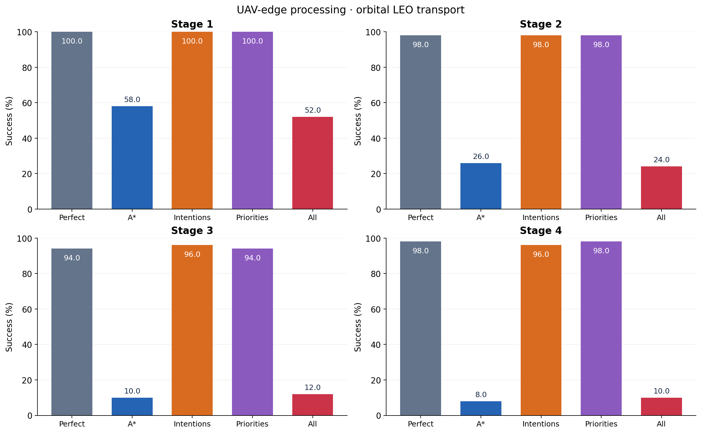
orbital uav success rate · PDF · SVG 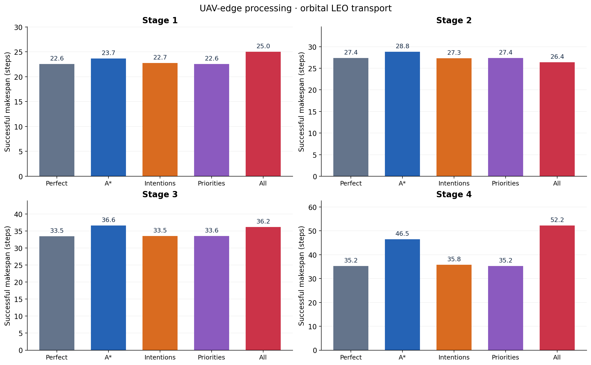
orbital uav successful makespan · PDF · SVG 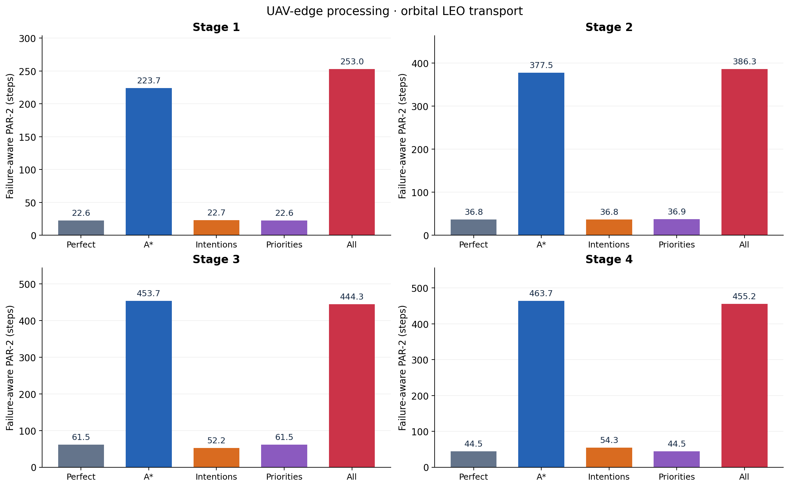
orbital uav par2 · PDF · SVG 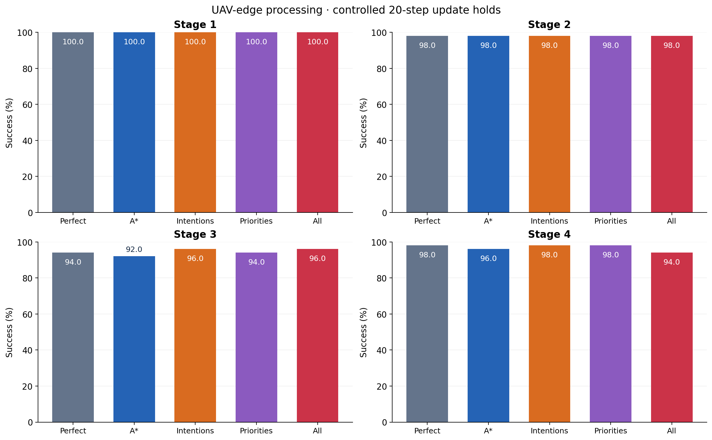
controlled20 uav success rate · PDF · SVG 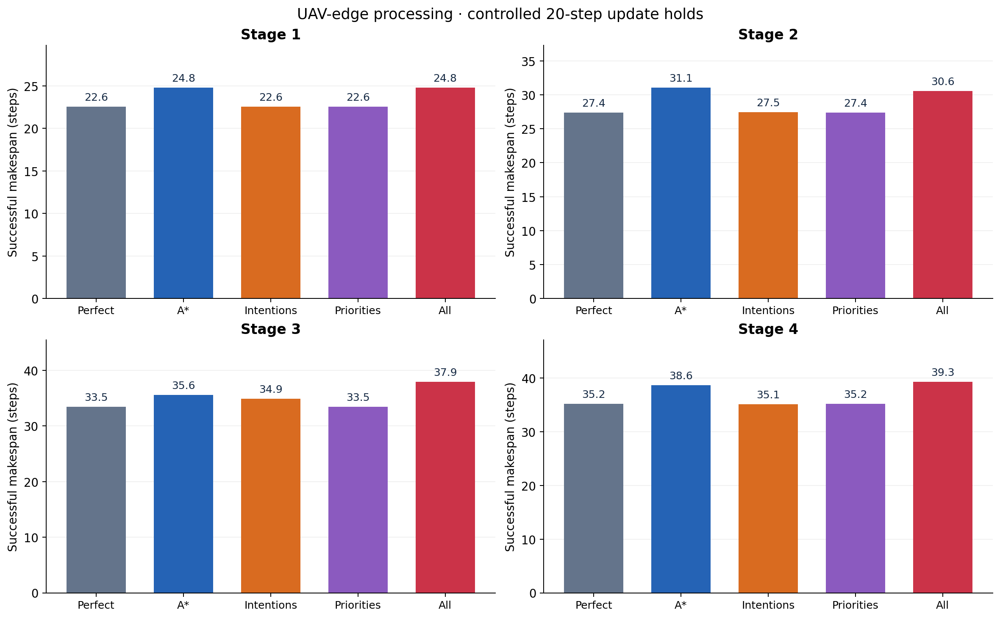
controlled20 uav successful makespan · PDF · SVG 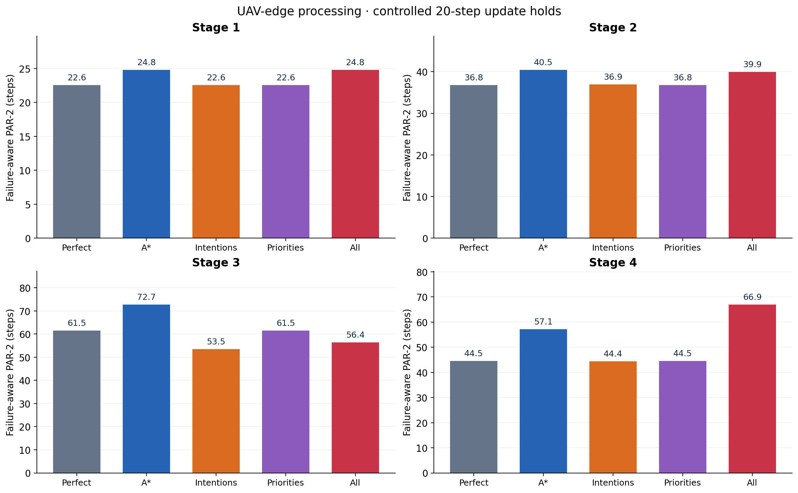
controlled20 uav par2 · PDF · SVG Makespan averages successful episodes. PAR-2 includes failures as 500 steps. Plots show measured outcomes for one trained seed; paired case confidence intervals are in inference_summary.csv. Unselected mission inputs and all local sensing remain fresh.